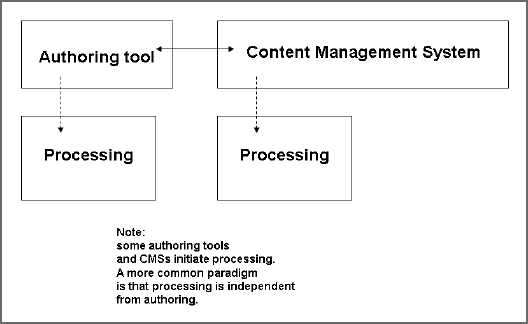

Creating and managing DITA content involves writing and editing with a "DITA-aware" authoring tool, and (in most organizations) storing and managing content using a content management system. Some authoring tools and CMSs contain the embedded DITA Open Toolkit (or equivalent functionality) to allow processing within the tool.

A "DITA-aware" authoring tool is the software used to create DITA source content.
An example would be <note>Text</note>.
An example would be a check to see whether the tags appearing in the document are nested according to rules in the document's DTDs.
To be truly effective, a CMS being used to store files for a DITA project must be aware of the tree-structued ("web") nature of the project, the content contained in the source files, and the relationships among the files and their content. The CMS must also be able to report on this kind of information: both meta information about the files, and syntactic and semantic information about the content. Ask your CMS vendor about the product's content analytical capabilities before deciding to buy.
It can also be useful for the CMS to include DITA Open Toolkit processing, and debugging and reporting aids that operate along with file processing. CMSs should also provide basic library (source control) functionality.